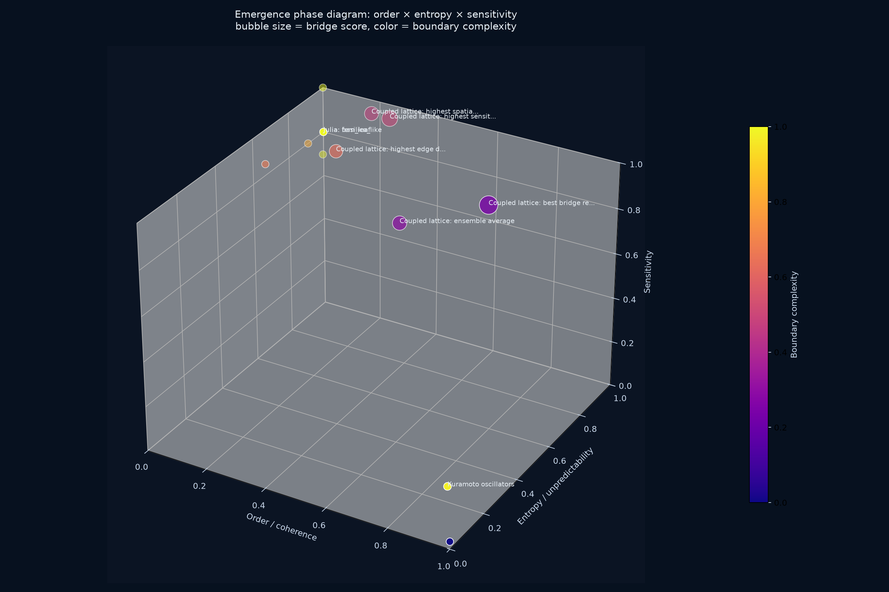
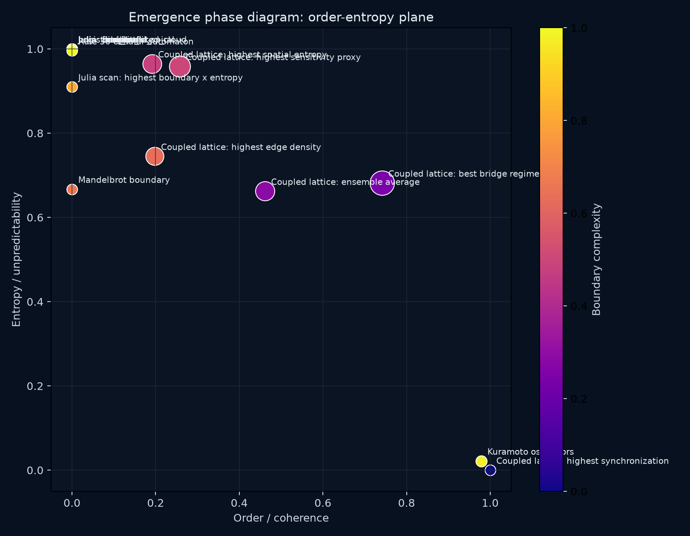
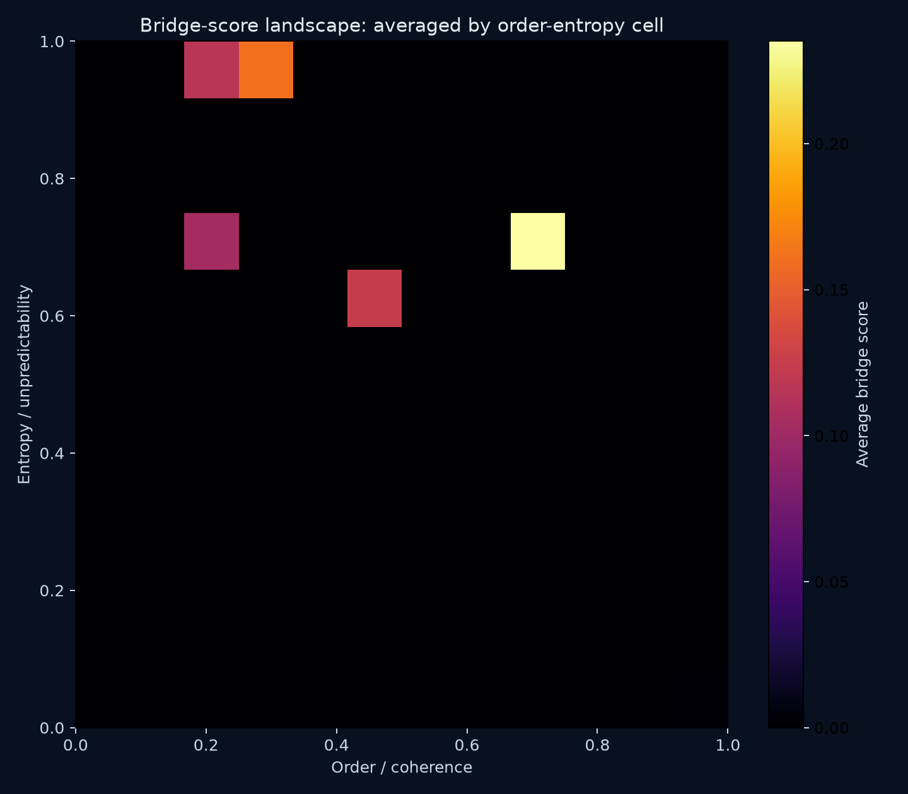

Operational map of current emergence-atlas points in the coordinate system: order × entropy × sensitivity × boundary_complexity.



| System | Order | Entropy | Sensitivity | Boundary | Bridge | Marker |
|---|---|---|---|---|---|---|
| Coupled lattice: best bridge regime | 0.7413 | 0.6817 | 0.9206 | 0.2389 | 0.2351 | best bridge score |
| Coupled lattice: highest sensitivity proxy | 0.2574 | 0.9584 | 0.9694 | 0.4983 | 0.1612 | max sensitivity score |
| Coupled lattice: ensemble average | 0.4610 | 0.6622 | 0.7541 | 0.2911 | 0.1241 | mean across all coupled-lattice cases |
| Coupled lattice: highest spatial entropy | 0.1910 | 0.9648 | 0.9659 | 0.4771 | 0.1175 | max mean spatial entropy |
| Coupled lattice: highest edge density | 0.1979 | 0.7450 | 0.9284 | 0.6308 | 0.1040 | max mean edge density |
| Kuramoto oscillators | 0.9783 | 0.0217 | 0.2500 | 0.9783 | 0.0052 | K=0.533 half-max order; K=4.000 max sampled order |
| Julia: fern_leaf | 0.0000 | 1.0000 | 0.8000 | 1.0000 | 0.0000 | c=-0.727+0.189i |
| Julia: basilica_like | 0.0000 | 1.0000 | 0.8000 | 1.0000 | 0.0000 | c=-0.750+0.000i |
| Julia: rabbit | 0.0000 | 1.0000 | 0.8000 | 1.0000 | 0.0000 | c=-0.123+0.745i |
| Julia: dragon | 0.0000 | 1.0000 | 0.8000 | 1.0000 | 0.0000 | c=-0.400+0.600i |